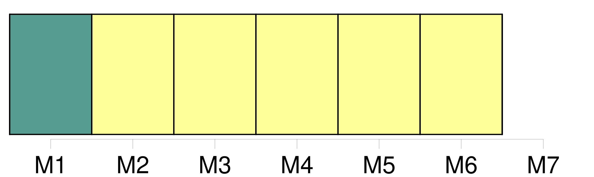
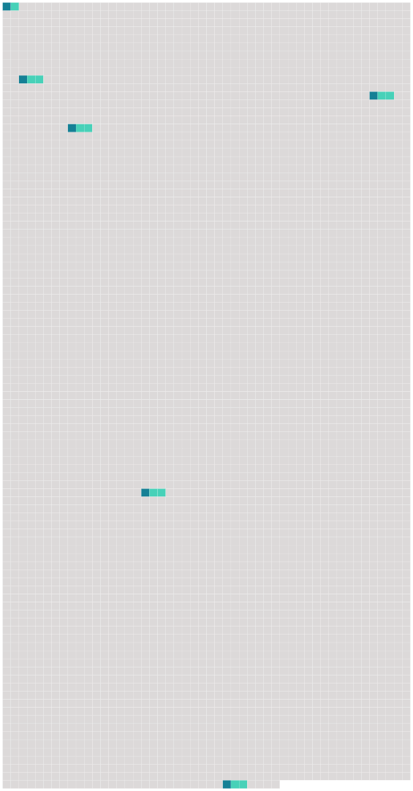

Longueur nb maillons : 6 mentions |
 |
[Article 4] [17 phrases]
Article 8 [2 phrases] L'expéditeur est responsable de l'exactitude des indications et déclarations concernant la marchandise inscrites par lui ou en son nom dans la lettre de transport aérien, ainsi que de celles fournies et faites par lui ou en son nom au transporteur en vue d'être insérées dans le récépissé de marchandises ou pour insertion dans les données enregistrées par les autres moyens prévus au paragraphe 2 de [l'article 4] [4 phrases]
Sous réserve des dispositions des paragraphes 1 et 2 du présent article, le transporteur assume la responsabilité de tout dommage subi par l'expéditeur ou par toute autre personne à l'égard de laquelle la responsabilité de l'expéditeur est engagée, en raison d'indications et de déclarations irrégulières, inexactes ou incomplètes insérées par lui ou en son nom dans le récépissé de marchandises ou dans les données enregistrées par les autres moyens prévus au paragraphe 2 de [l'article 4] [68 phrases]
Toutefois, lorsque la destruction, la perte, l'avarie ou le retard d'une partie des marchandises, ou d'un objet qui y est contenu, affecte la valeur d'autres colis couverts par la même lettre de transport aérien ou par le même récépissé ou, en l'absence de ces documents, par les mêmes indications consignées par les autres moyens visés à [l'article 4] , paragraphe 2, le poids total de ces colis doit être pris en considération pour déterminer la limite de responsabilité. [43 phrases]
La réception des bagages enregistrés et des marchandises sans protestation par le destinataire constituera présomption, sauf preuve du contraire, que les bagages et marchandises ont été livrés en bon état et conformément au titre de transport ou aux indications consignées par les autres moyens visés à l'article 3, paragraphe 2, et à [l'article 4] , paragraphe 2. |
 |
Il est possible de télécharger la ressource sur la page Ortolang |
Si vous avez des questions ou vous voyez des erreurs, merci d'envoyer un mail à silvia.federzoni89@gmail.com |